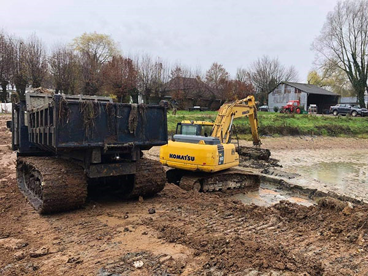

Le curage extrait la vase, les sédiments et les matières organiques accumulés au fond de votre étang. Sans entretien, un plan d'eau perd en moyenne 2 à 5 cm de profondeur par an — jusqu'à 50 % en 20 ans. Nous intervenons avec des engins amphibies adaptés à chaque configuration de site.
- Diagnostic préalable et mesure de l'envasement
- Extraction mécanique par pelle amphibie ou drague aspirante
- Curage avec ou sans mise à sec selon le volume
- Gestion et valorisation des sédiments extraits (épandage, stockage)
- Accompagnement des démarches Loi sur l'eau
- Remise en eau progressive et suivi post-chantier
Bon à savoir
Le curage est soumis à la Loi sur l'eau. Selon le volume extrait et la nature du cours d'eau, une déclaration préalable ou une autorisation préfectorale peut être obligatoire. ETS Vandaele accompagne ses clients dans toutes les démarches administratives.
Roseaux, jussies, nénuphars, myriophylles… Sans intervention, ces espèces colonisent un plan d'eau entier en quelques saisons. Nos bateaux faucardeurs et engins spécialisés coupent et extraient mécaniquement les végétaux directement depuis l'eau — sans drainage préalable.
- Identification et cartographie des espèces présentes
- Coupe et extraction mécanique des végétaux
- Traitement des espèces invasives (jussie, myriophylle du Brésil)
- Suppression des nénuphars et plantes flottantes
- Plan d'entretien annuel ou bisannuel sur mesure
- Intervention sans mise à sec du plan d'eau
Bon à savoir
La jussie et le myriophylle du Brésil sont des espèces exotiques envahissantes (EEE) dont le transport est strictement réglementé. Nos équipes assurent une gestion conforme avec traçabilité complète des végétaux collectés.

L'érosion des berges est silencieuse mais constante : vagues, crues, gel, passages d'animaux. Sans protection, une rive peut reculer de plusieurs centimètres par an. Nos solutions s'adaptent à la nature du sol, au contexte hydraulique et à l'esthétique de votre site.
- Enrochement naturel (blocs calcaires, granite, grès)
- Palplanches bois, acier ou PVC
- Gabions et matelas de pierres
- Géotextile et fixation de talus
- Fascines et techniques de génie végétal
- Végétalisation et ensemencement des berges réparées
Bon à savoir
L'enrochement naturel, associé à une végétalisation de berge, est la solution la plus durable et la plus écologique. Un géotextile posé en dessous empêche l'affouillement des blocs et renforce la longévité de l'ouvrage.
L'hydrocurage nettoie fossés, buses, drains et canaux par injection d'eau à haute pression combinée à une aspiration simultanée des dépôts. Pas de mise à sec, pas de démontage : la technique idéale pour des ouvrages hydrauliques bouchés ou sous-performants.
- Fossés agricoles et réseaux d'irrigation
- Buses, dalots et caniveaux bouchés
- Canaux de drainage routier et autoroutier
- Curage de douves de châteaux et plans d'eau historiques
- Nettoyage sans démontage des ouvrages existants
- Évacuation contrôlée des boues aspirées
Bon à savoir
Contrairement au curage mécanique, l'hydrocurage ne requiert aucune mise à sec. Il préserve les ouvrages existants et réduit les délais d'intervention. Idéal pour les chantiers en zone urbaine ou à accès limité.
Nos chenillettes broyeuses à larges chenilles interviennent là où les engins classiques ne peuvent pas aller : zones marécageuses, roselières denses, berges boisées. Leur faible pression au sol préserve les milieux sensibles tout en restant redoutablement efficaces.
- Broyage de roselières sur terrain marécageux
- Fauchage de roseaux avec ou sans export des végétaux
- Broyage forestier : arbustes, taillis, ronciers
- Entretien de berges envahies par la végétation ligneuse
- Débroussaillage en zones humides et terrains en pente
- Adaptable à toutes tailles de chantier
Bon à savoir
Le broyage de novembre à mars est recommandé pour respecter les périodes de nidification des oiseaux. En zone Natura 2000, une autorisation préalable peut être requise — nous vérifions la réglementation locale avant chaque intervention.

Les milieux marécageux demandent un matériel adapté et une expertise spécifique. Nos engins à chenilles larges interviennent pour l'entretien et la restauration de fossés, canaux et zones humides — même sur des terrains entièrement gorgés d'eau.
- Curage de fossés et canaux de drainage
- Recalibrage et reprofilage de canaux agricoles
- Entretien de roselières et zones humides
- Nettoyage et débroussaillage en terrains difficiles
- Travaux sur zones Natura 2000 (protocole adapté)
- Impact minimal sur les sols et la faune
Bon à savoir
Nos chenillettes exercent une pression au sol inférieure à 0,2 kg/cm² — moins qu'un adulte qui marche. Elles peuvent travailler sur des terrains entièrement gorgés d'eau sans s'enliser ni détériorer la structure des sols sensibles.

Avant tout chantier, nous réalisons un relevé bathymétrique complet de votre plan d'eau. Cette cartographie précise des profondeurs est la base d'un diagnostic fiable et d'un devis juste — elle évite les mauvaises surprises en cours de chantier.
- Relevé bathymétrique par sondeur à ultrasons
- Cartographie 3D des zones d'envasement
- Analyse et prélèvement des sédiments
- Diagnostic de l'état des berges et des ouvrages
- Rapport complet avec recommandations priorisées
- Estimation précise du volume à extraire et des coûts
Bon à savoir
La bathymétrie est notre étape incontournable avant tout curage important. Elle permet de cibler les zones d'envasement, de calculer le volume exact à extraire et de choisir la technique la mieux adaptée. Elle est incluse dans notre diagnostic de chantier.